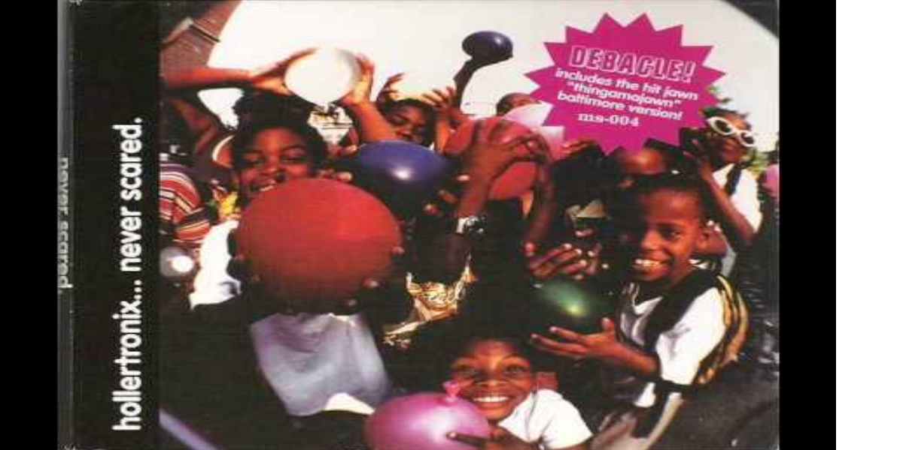
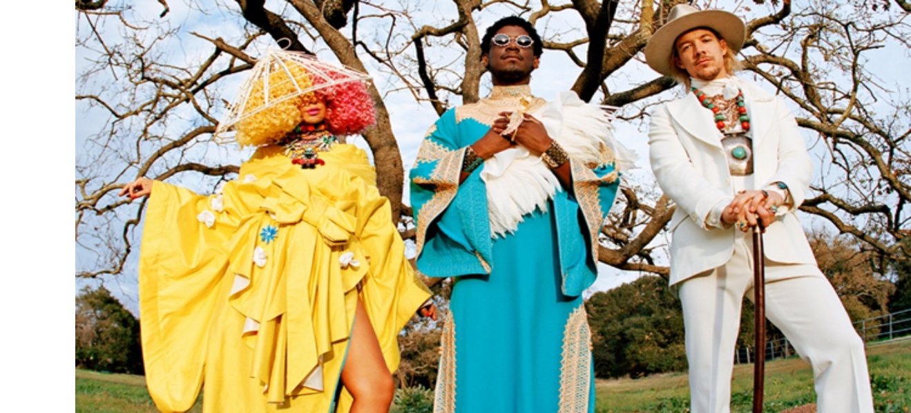

Qui est ce ?
Thomas Wesley Pentz est un artiste Américain né le 10/11/1978 à Tupelo dans le Mississippi. Il est plus communément appelé Diplo. Ce nom de scène serait inspiré d’après certaines sources de son affection pour le dinosaure appelé le Diplodocus. Pour faire un bref résumé de sa jeunesse, l’artiste a passé une grande partie de son enfance à Miami. Il étudiera en Floride en 1997 puis en Philadelphie plus tard. C’est là qu’il sera repéré pour ses talents de disc-jockey ou « dj ». Il collaborait à cette époque avec DJ Low Budget sous le nom de « Hooked on Hollertronix ».
Début de l'ascension

C’est en 2003, alors que les deux dj sont de plus en plus connus, que des artistes comme Maluca Mala, Bun B ou encore M.I.A, avec qui il va entretenir une relation amoureuse près de 5 ans suivant leur collaboration, apparaissent à leur côté pendant des soirées et fêtes. Tout ce succès leur permet de sortir une première mixtape (toujours en 2003) intitulée « Never Scared » dans laquelle d’autres artistes très connus tels que Justin Timberlake ou bien R.Kelly prêtent leur voix. C’est en 2004 qu’il sort son premier album solo « Florida » produit par le label anglais Ninja Tunes. Plus tard, sa grande diversité plaira à de nombreux artistes de classe mondiale. Il produira des titres de Shakira, Beyoncé, Bruno Mars ou encore Snoop Dogg pour ne citer qu’eux.
Diplo est aussi ambitieux et souhaite ouvrir un studio où son propre label « Mat Decent » sera logé : « À cette période, les soirées Hooked on Hollertronix ne lui permettent pas d'accéder à l'étape suivante nécessaire et de financer la construction d'un studio dans lequel il pourra se consacrer à la musique à plein temps. Avec ce but en tête, Diplo fonde, The Mausoleum, un grand espace d'accueil à Philadelphie. Depuis son lancement, The Mausoleum devient l'espace d'enregistrement pour des musiciens comme Christina Aguilera, Shakira, M.I.A., Santigold, Spank Rock, Plastic Little, Blaqstarr, Paper Route Gangstaz, et abrite des concerts de Glass Candy, Skream, Boys Noize, et Nicos Gun. »
En 2009, il se lance dans un projet de groupe avec le dj Switch, Major Lazer. Comme à son habitude, il y mélange différents types de musique, rap, électro, reggae… Switch va finalement quitter le groupe, Diplo continuera alors son chemin au côté de DJ Jillionaire et Walshy Fire. En 2013, le groupe sort l’album « Free The Universe » qui sera nommé aux NRJ DJ Awards comme meilleur album dance/électro de l’année et en 2015, « Peace is the Mission » sort. Mais Major Lazer n’est pas son unique projet en collaboration !
« En 2013, Diplo s'associe à Skrillex pour former le groupe Jack Ü. Ce dernier, sort son premier album, intitulé "Skrillex and Diplo Present Jack Ü", en février 2015. Le groupe s'associe à plusieurs artistes aux univers divers tels que Kiesza, 2 Chainz ou encore AlunaGeorge. Le groupe sort aussi "Where Are Ü Now" avec Justin Bieber. Ce single remporte un franc succès et est certifié plusieurs fois disque de platine. »
En mars 2018, Diplo dévoile finalement un troisième projet de groupe, en collaboration avec la grande Sia, chanteuse australienne, ainsi que le chanteur britannique Labyrinth. Le groupe a pour nom les initiales des trois artistes, « LSD ».
Diplo est donc aujourd’hui DJ, Producteur, Auteur, Rappeur, Beatmeaker et surtout papa de deux enfants !
